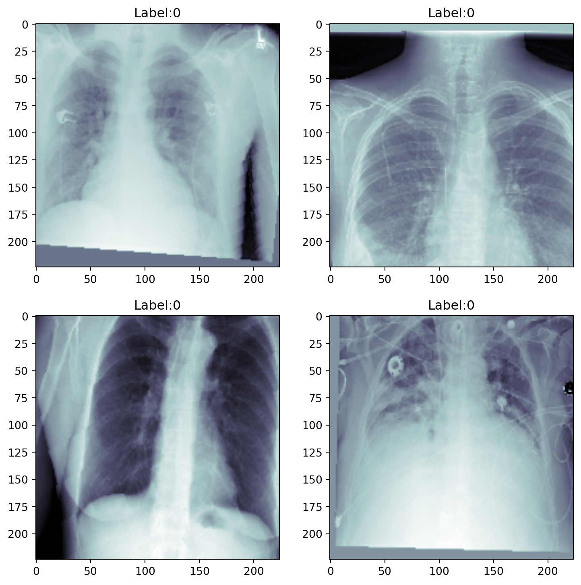
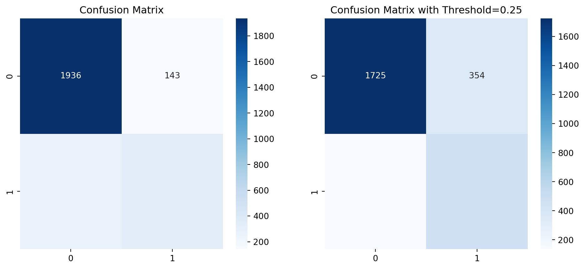

En este notebook, crearemos y entrenaremos un clasificador en el conjunto de datos de rayos X de tórax para clasificar si una imagen muestra signos de neumonía o no.
5.1 Transformaciones para Aumentación y Normalización de Datos
Transformaciones en entrenamiento: Se usan para aumentar los datos y evitar sobreajuste. Incluye recortes, rotaciones, traslaciones, y cambios de escala para que el modelo aprenda a generalizar mejor.
Transformaciones en validación: Solo incluye la normalización, ya que no queremos alterar las imágenes durante la evaluación.
Usamos: - un recorte aleatorio de la imagen y la redimensiona al tamaño original (224x224). - Rotaciones aleatorias entre -5 y 5 grados. - Traslación aleatoria (máximo 5%). - Escalado aleatorio (0.9-1.1 del tamaño original de la imagen).
Code
train_transforms = transforms.Compose([ transforms.ToTensor(), # Convert numpy array to tensor transforms.Normalize(0.49, 0.248), # Use mean and std from preprocessing notebook transforms.RandomAffine( # Data Augmentation degrees=(-5, 5), translate=(0, 0.05), scale=(0.9, 1.1)), transforms.RandomResizedCrop((224, 224), scale=(0.35, 1))])val_transforms = transforms.Compose([ transforms.ToTensor(), # Convert numpy array to tensor transforms.Normalize([0.49], [0.248]), # Use mean and std from preprocessing notebook])

Code
batch_size =64num_workers =4train_loader = torch.utils.data.DataLoader( train_dataset, batch_size=batch_size, num_workers=num_workers, shuffle=True, persistent_workers=True)val_loader = torch.utils.data.DataLoader( val_dataset, batch_size=batch_size, num_workers=num_workers, shuffle=False, persistent_workers=True)print(f"Tenemos {len(train_dataset)} imagenes de entrenamiento y {len(val_dataset)} imagenes de validación")
Tenemos 24000 imagenes de entrenamiento y 2684 imagenes de validación
Las clases están desbalanceadas: hay más imágenes sin signos de neumonía que con neumonía. Existen varias formas de manejar conjuntos de datos desbalanceados:
ResNet-18: Se modifica para aceptar imágenes en escala de grises (un solo canal, en lugar de tres como en imágenes RGB).
Binary Cross-Entropy with Logits: Esta función combina la sigmoide y la entropía cruzada en una sola operación, y aquí se ajusta para darle más peso a la clase minoritaria (neumonía).
Accuracies: Se usan para rastrear la precisión en cada paso de entrenamiento y validación.
5.4 Entrenamiento y validación
El flujo para el entrenamiento y validación es muy similar:
En training_step, se calcula la pérdida y la precisión, y se almacenan para usarlas al final de la época.
En validation_step, se hace lo mismo pero en el conjunto de validación, sin actualizar los pesos del modelo.
5.5 Optimizador y Devolución de Llamadas
Se usa un solo GPU para el entrenamiento. Si hay más GPUs disponibles, se puede ajustar el número.
ModelCheckpoint: Guarda el mejor modelo basado en la precisión de validación.
/opt/anaconda3/envs/INER/lib/python3.12/site-packages/torch/storage.py:414: FutureWarning:
You are using `torch.load` with `weights_only=False` (the current default value), which uses the default pickle module implicitly. It is possible to construct malicious pickle data which will execute arbitrary code during unpickling (See https://github.com/pytorch/pytorch/blob/main/SECURITY.md#untrusted-models for more details). In a future release, the default value for `weights_only` will be flipped to `True`. This limits the functions that could be executed during unpickling. Arbitrary objects will no longer be allowed to be loaded via this mode unless they are explicitly allowlisted by the user via `torch.serialization.add_safe_globals`. We recommend you start setting `weights_only=True` for any use case where you don't have full control of the loaded file. Please open an issue on GitHub for any issues related to this experimental feature.

Las métricas clave en este tipo de problemas de clasificación binaria (como la detección de neumonía a partir de imágenes de rayos X) son precisión, recall (sensibilidad), matriz de confusión, y exactitud (accuracy).
5.6.1Exactitud (Accuracy)
La exactitud es la proporción de predicciones correctas (tanto verdaderos positivos como verdaderos negativos) con respecto al total de predicciones realizadas.
TP: Verdaderos positivos (correctamente clasificados como con neumonía).
TN: Verdaderos negativos (correctamente clasificados como sin neumonía).
FP: Falsos positivos (incorrectamente clasificados como con neumonía).
FN: Falsos negativos (incorrectamente clasificados como sin neumonía).
En el caso de nuestro modelo, por ejemplo, un valor de 0.8457 de exactitud indica que el 84.57% de las predicciones fueron correctas, es decir, el modelo clasificó correctamente tanto las imágenes que mostraban neumonía como las que no.
Limitación: En datasets desbalanceados (como en este caso), la exactitud puede ser engañosa, ya que un modelo puede obtener alta exactitud solo por predecir siempre la clase mayoritaria (en este caso, probablemente las radiografías sin neumonía). Por eso, necesitamos otras métricas como precision y recall.
5.6.2Precisión (Precision)
Definición: La precisión mide qué proporción de las predicciones positivas (el modelo dice que hay neumonía) son realmente correctas.
\(\text{Precision} = \frac{TP}{TP + FP}\)
La precisión de 0.7002 significa que, de todas las veces que el modelo predijo neumonía (incluyendo falsos positivos), el 70.02% de esas predicciones fueron correctas.
5.6.3Recall
El recall o sensibilidad mide qué proporción de los casos positivos reales (personas con neumonía) fueron correctamente identificados por el modelo.
\(\text{Recall} = \frac{TP}{TP + FN}\)
En nuestro modelo, el recall es 0.5520, lo que significa que el modelo identificó correctamente el 55.20% de los pacientes con neumonía.
Un bajo valor de recall indica que el modelo está fallando en detectar algunos casos de neumonía (falsos negativos). Esto es problemático en contextos clínicos porque significa que algunas personas que realmente tienen neumonía no serán diagnosticadas por el modelo, lo cual es crítico en términos de tratamiento.
5.6.4Matriz de Confusión
La matriz de confusión ofrece una representación más detallada de las predicciones del modelo. Se desglosa en cuatro valores clave:
TP (Verdaderos Positivos): Casos de neumonía correctamente clasificados.
TN (Verdaderos Negativos): Casos sin neumonía correctamente clasificados.
FP (Falsos Positivos): Casos sin neumonía que fueron clasificados como neumonía.
FN (Falsos Negativos): Casos de neumonía que fueron clasificados como sanos.
1936: Verdaderos negativos (el modelo predijo correctamente que no había neumonía).
143: Falsos positivos (el modelo predijo neumonía cuando no la había).
271: Falsos negativos (el modelo no detectó neumonía cuando sí la había).
334: Verdaderos positivos (el modelo detectó correctamente los casos de neumonía).
Una matriz de confusión como esta te permite ver en qué está fallando el modelo, en este caso, hay más falsos negativos que falsos positivos, lo que es una preocupación en aplicaciones clínicas.
Al cambiar el umbral de decisión a 0.25, el modelo se vuelve más propenso a clasificar como neumonía, lo que reduce los falsos negativos (de 271 a 136), pero incrementa los falsos positivos (de 143 a 354).
Este ajuste en el umbral es útil si prefieres minimizar los falsos negativos (casos de neumonía no detectados) a costa de aumentar algunos falsos positivos (personas sanas que son clasificadas incorrectamente como con neumonía).
5.6.6Trade-offs Entre Precisión y Recall:
Alta precisión y bajo recall: El modelo es muy preciso en sus predicciones, pero podría estar perdiendo muchos casos positivos (en este caso, personas con neumonía).
Alta recall y baja precisión: El modelo detecta la mayoría de los casos positivos, pero también produce más falsos positivos.
5.6.7Consideraciones Clínicas:
En un contexto médico, es crucial mantener un equilibrio entre recall y precisión, dependiendo del impacto de los falsos positivos y falsos negativos.
En el caso de neumonía, podrías priorizar un alto recall para no perder casos verdaderos, ya que no detectar neumonía a tiempo puede ser crítico para la salud del paciente.